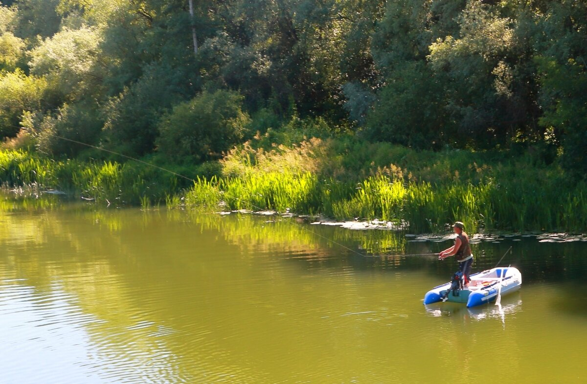
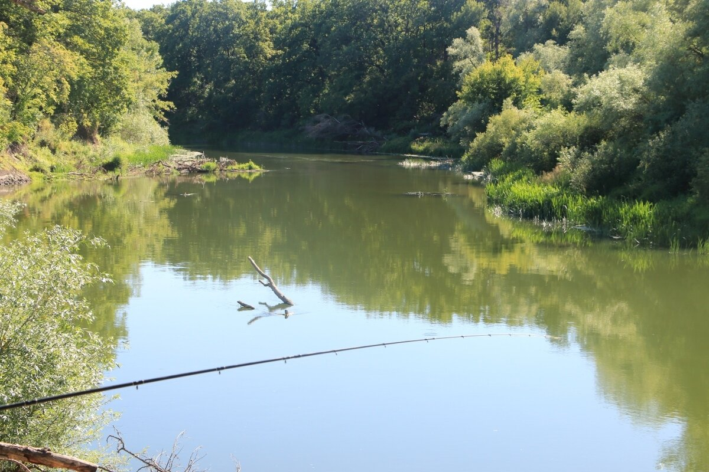
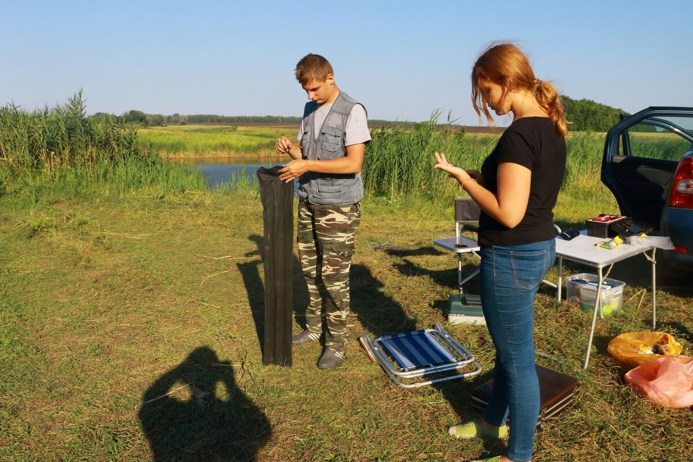
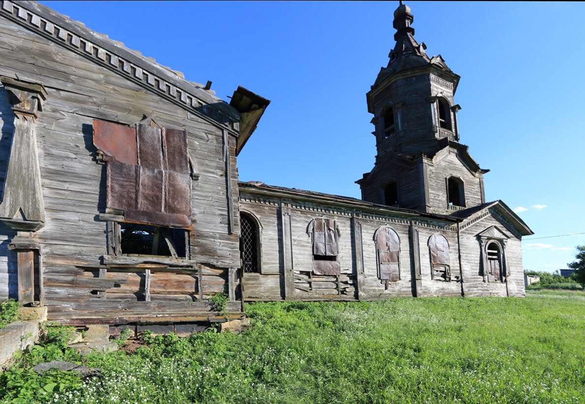
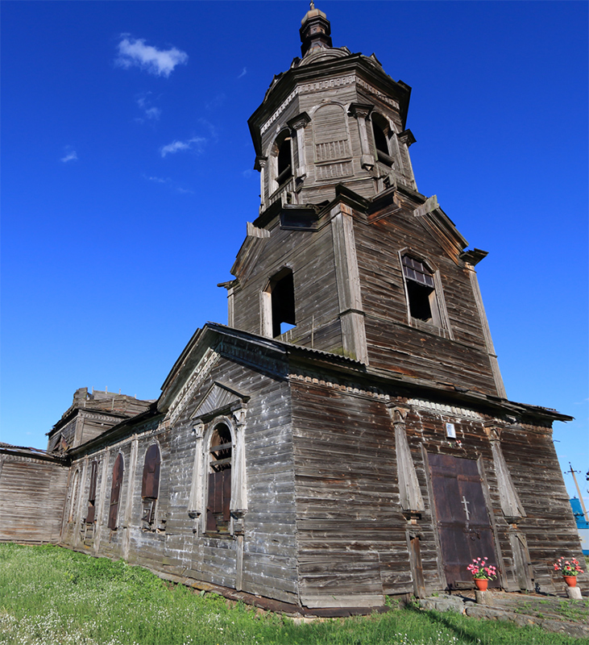

 <div style="text-align:left"><span style="font-size: medium;"><br/><br/><br/>Воспоминания о прошедшем лете торопят дни: скорее бы новое лето. Со всеми оттенками красок и ощущений.<br/>Чтобы снова со спинингом на славную речку Ворону.<br/><br/><center><br/><a href="https://fotki.yandex.ru/next/users/galley42/album/193009/view/1100870" target="_blank" target="_blank" rel="nofollow"></a><br/></center><br/><a name="cutid1"></a> Или с фидером<br/><center><br/><a href="https://fotki.yandex.ru/next/users/galley42/album/193009/view/1100869" target="_blank" target="_blank" rel="nofollow"></a><br/></center><br/>И чтобы снова делать такие селфи после рыбалки. Когда и усталые, и недовольные...<br/><center><br/><a href="https://fotki.yandex.ru/next/users/galley42/album/193009/view/1100871" target="_blank" target="_blank" rel="nofollow"></a><br/></center><br/><br/>И чтобы снова дым Отечества,<br/><center><br/><a href="https://fotki.yandex.ru/next/users/galley42/album/193009/view/1100873" target="_blank" target="_blank" rel="nofollow"></a><br/></center><br/> который и сладок, и приятен<br/><br/><center><br/><a href="https://fotki.yandex.ru/next/users/galley42/album/193009/view/1100872" target="_blank" target="_blank" rel="nofollow"></a><br/></center><br/><br/>Доживем? Доживем.</span></div> 